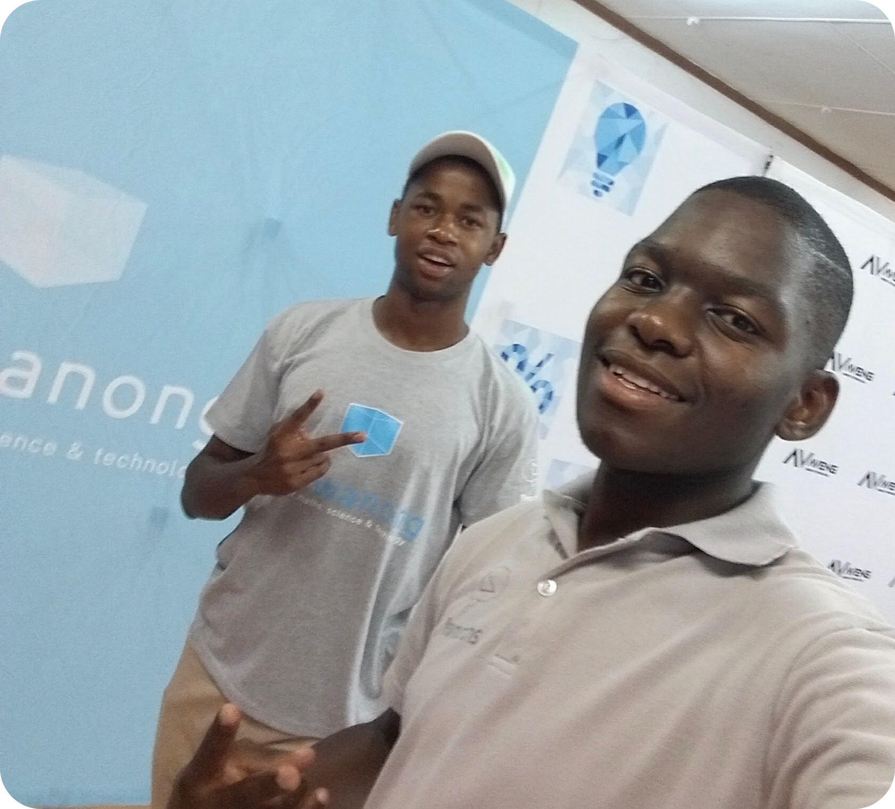
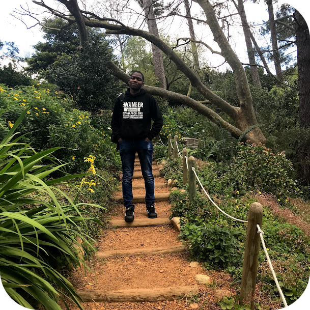

About Evans Tjabadi
Background
I was born and bred in GaMalaka, a village in the mountains of Sekhukhune in Limpopo. I completed my junior education at Sedikwe Primary and my secondary education at Matshumane Secondary. I formed part of Kutlwanong, which is a maths and science programme that provided weekend extra classes. This required me to be within school premises 7 days a week. Consequently, I took the 26th position in the Limpopo province, 3rd in the Sekhukhune district and 1st in my school and Kutlwanong. Moreover, I obtained 100% in physical sciences and placed amongst the top learners in the subject.

Current
I am studying towards BSc electrical engineering at the University of Cape Town. In 2016, I was recognised as a top student in Maths 1A and for being within top 15% in Computer Science 1B. Furthermore, I made it to Dean’s Merit List and received various residence academic awards in 2016, 2017 and 2018 in recognition of consistent academic excellence. As a result of my academic performance, I am a member of Golden Key International Honour Society. In addition to my studies, I have attended an engineering student training at the Cape Peninsula University of Technology in 2017. The training developed my skills in CNC, Welding, Robotics, Fitting/Turning and Pneumatics. Additionally, I have worked on AM radio receiver project within the university and also taken vacation work at MTN within their Networks Group. From the aforementioned, I have gained academic and industrial insights into Networks operations, especially transmission, planning and optimization. Outside my academic bubble, I have served as Kutlwanong alumni society secretary, floor mentor at Kopano residence, and church small group leader. I have been engaged in a couple of society committees from second year and I partook in a few case study competitions including one at Deloitte and another at KPMG. Recently, my team won one of the two first places in the entrepreneurship Pitch UCT competition 2019. I have grown to be a well-rounded individual through involvement in different organizations and events especially in university. In my participation in society executive communities, mentorship programmes and tutoring, I have grown and perfected my organisational and planning skills for an efficient and timeous plan executions. I am hardworking individual who put much planning and effort into work at hand. I have the capacity and ability to work in a team and still excel on an individual level. I have proved determination into work performance with my university results and case study consulting competitions.

How is the future looking?
Once I graduate with my bachelor’s degree from UCT, I plan to work as a network engineering intern with a telecommunication company in South Africa. I plan to learn the language of networking from an operator’s and market view and travel the world to learn about what other countries are doing in the space. My great passion is to help connect the developing regions and communities and better the quality of services of the already connected. I am planning on continuing with part-time learning and be specifically more focused on data science tools and a bit of programming to extra and present raw and processed data. I am planning to aggregate my networking technical and soft skills by launching an Internet Service Provider in the future and provide connectivity to the world.